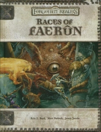

“Races of Faerûn” on the
Shelf of Many Books

Races of Faerûn
D&D 3.5
(3e)
Year
: 2003 (March)
Races of Faerûn
on Amazon
Races of Faerûn
on TSR Info
Known monsters from the book:
Cavvekan
Deathfang
Flying Snake
Ibis
Lynx
Mastiff
Osquip
Steeder